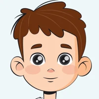
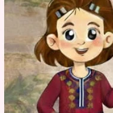
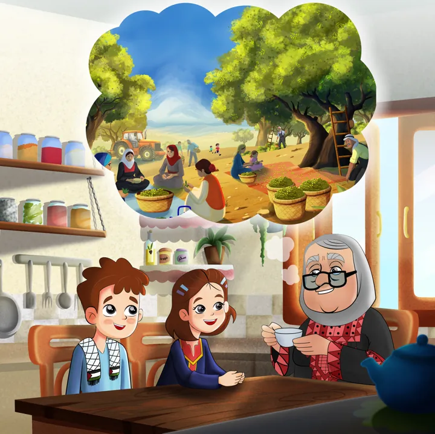
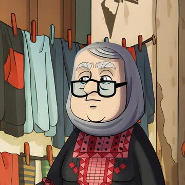
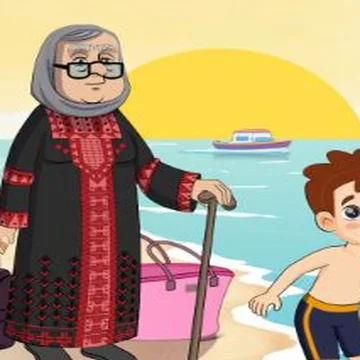
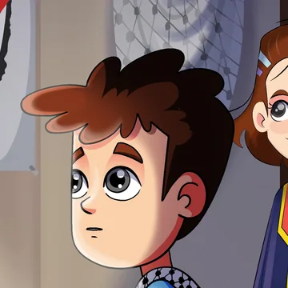
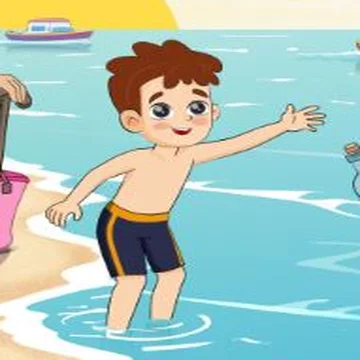
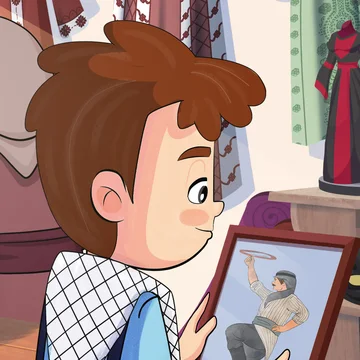
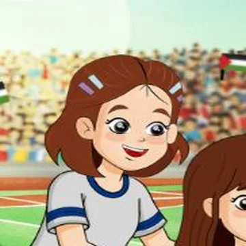
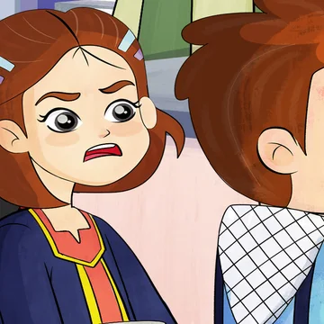

دليل الهوية
بين يدين
الهوية مبنية مما تملكه المنصة فعلا، لا مما يمكن اختراعه: يدا شعارها، وثيقة ميثاقها التي تحمل التوقيع والختم، وشخصيات حكاياتها. كل شيء في الموقع إما ورقة عليها توقيع، أو شيء تحمله اليدان.
- 3أصول: يدان، وثيقة، ختم
- 3شخصيات
- 19مشهدا
- 20أيقونة
مكتبة الأصول
كلها من المنصة نفسها. لم يولد أي أصل بالذكاء الاصطناعي.


اليدان
مقصوصتان من الشعار كطبقتين. تحملان الوثيقة في رأس الصفحة، وتنفتحان في الختام. لا تستخدمان إطارا لكل صورة.
- نتعهد، نحن عائلةعائلتنا
الوثيقة
ورقة بخط توقيع. هي بطل رأس الصفحة، وشكل نموذج التوقيع.

الختم
قلب الشعار داخل دائرة. يطبع عند التوقيع، ويرافق الأرقام والأختام.


الشخصيات
الجدة ورائد ويافا من رسوم المنصة كما هي.

المشاهد
19 مشهدا من حلقات البودكاست. المشهد الواحد يظهر في موضع واحد من الصفحة.
الأيقونات
عائلة واحدة مرسومة بألوان الشعار، أشكال مليئة لا خطوط رفيعة.
ثلاثة اتجاهات، واختيار واحد
قورنت على سؤال واحد: أيها يخص ميثاق العائلة وحدها؟
- المختار
هوية هجينة حية
يدا الشعار مقصوصتان منه وتتحركان، والوثيقة ورقة حقيقية يكتب عليها الزائر اسم عائلته فتختم، ورسوم المنصة الأصلية داخل اليدين. لا شيء مولد.
- استبعد
رسم ثنائي الأبعاد فاخر
إعادة رسم الشخصيات بنظام جديد. الرسوم الموجودة جيدة ومتسقة في 19 مشهدا، فإعادة رسمها تكلفة بلا مكسب.
- استبعد
عالم ثلاثي الأبعاد
وثيقة وختم ويدان مجسمة. يحتاج نماذج لا تملكها المنصة ومكتبة ثقيلة، ويبتعد عن رسوم حكاياتها.
الشخصيات
كل حالة هنا مقصوصة من مشهد حقيقي. لكل شخصية دور، وتظهر حيث يليق دورها.
-
الراوية
الجدة
حجاب رمادي، نظارة سوداء، ثوب أسود، عكاز. تظهر حين يكون في القسم حكاية أو شرح.
 تضحك
تضحك تشرح
تشرح
تتأمل
تمشي بعكازها
-
السائل
رائد
شعر بني، كوفية على الكتفين، قميص أزرق فاتح وأفرول كحلي. يظهر عند الفعل والتجربة.

يركز يفرح
يفرح
يلعب
يقرأ
-
المبادرة
يافا
شعر بني بمشابك، فستان كحلي بحاشية ملونة. تظهر عند المشاركة والعطاء.
 تندهش
تندهش تكتب
تكتب
تساعد
تعترض
- نسبة الرأسثلث طول الطفل تقريبا
- العيونكبيرة بلمعة واحدة
- الخطبلا حد خارجي أسود، تظليل ناعم
- الإضاءةدافئة من مصدر داخل المشهد
- القصلا يقطع وجها ولا يدا
- التكرارمشهد واحد = موضع واحد في الصفحة
- رائد الواقففي رأس الصفحة فقط
- مشاهد جديدةترسم بيد رسام المنصة، لا تولد
عائلة واحدة من الأيقونات
عشرون رسمة بصندوق واحد، أشكال مليئة، وألوان الشعار الستة.
- كتب
- فيديو
- بودكاست
- قصص مصورة
- بطاقات
- مقالات
- قنديل
- توقيع
- ختم
- بيت
- ناس
- قلب
- العالم
- شجرة
- زيتون
- الأسبوع
- سؤال
- لعب
- هاتف
- رسالة
هكذا
كل مربع فيه أيقونة يأخذ رسمته من العائلة. المربع نفسه بشكل واحد: أبيض أو ضباب.
ليس هكذا
خط رفيع داخل مربع ملون. الخط الرفيع مكانه داخل الأزرار والروابط فقط.
الألوان والخطوط
وردي وأزرق الشعار، حبر، ورمادي بارد. وخط رقعة للتوقيع فقط.
- حبر
#10303Bالعناوين والأزرار الداكنة13.6:1 - أزرق عميق
#1F6079الروابط والنصوص الملونة7:1 - أزرق الشعار
#409DB7الأيقونات والتأكيد - ورد عميق
#B03A62الزر الأساسي5.8:1 - ورد الشعار
#E087A6اللمسات فقط - نور
#F4B740نقطة ضوء واحدة - ضباب
#F3F7F9خلفيات الأقسام
- العناوين · Baloo Bhaijaan 2
عهد من بيتك يسند بيتا في فلسطين
- النص · Rubik
ميثاق عهد تلتزم فيه عائلتك بنصرة أهلنا في فلسطين، وحقيبة توعوية تصل بيتك كل شهر.
- التوقيع · Aref Ruqaa
عائلة النجار
ما خرج من الهوية
بطلب صريح، ولا يعود.
- التطريز والزخارف التراثية
- الأنماط المتكررة لملء المساحات
- رسوم عائلات مولدة
- شخصيات من أشكال هندسية
- رسوم جاهزة من مكتبات
- خلفيات بيج أو ورق دافئ
الحركة
كل حركة لفعل. جربوها هنا.
- نتعهد، نحن عائلةالنجار
الختم يطبع
بعد التوقيع فقط.
- نتعهد، نحن عائلةعائلتنا
الوثيقة تميل
مع حركة المؤشر. حركوا المؤشر فوقها.
اليدان تنغلقان
عند دخول رأس الصفحة، وتنفتحان في الختام.
- مدة الاستجابة140–260ms
- تقليل الحركةيلغي كل ما سبق
- اليدان تشدانأثناء كتابة الاسم
النسخ السابقة
محفوظة كما كانت، كل واحدة موقع كامل.